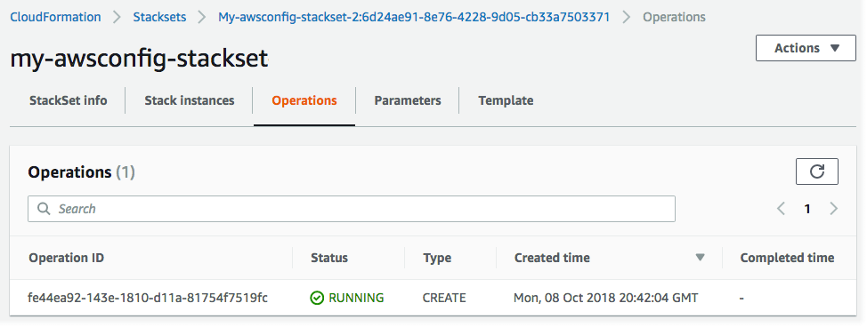

스택 세트 생성
AWS Management Console 또는 AWS CloudFormation의 AWS CLI 명령을 사용하여 스택 세트를 생성할 수 있습니다. self-managed 또는 service-managed 권한을 사용하여 스택 세트를 생성할 수 있습니다.
self-managed 권한을 사용하여 특정 리전의 특정 AWS 계정에 스택 인스턴스를 배포할 수 있습니다. 이렇게 하려면 먼저 스택 세트를 관리하는 계정과 스택 인스턴스를 배포할 계정 간에 신뢰할 수 있는 관계를 설정하는 데 필요한 IAM 역할을 만들어야 합니다.
service-managed 권한을 사용하면 특정 리전에서 AWS Organizations 관리 계정에 스택 인스턴스를 배포할 수 있습니다. 이 모델을 사용하면 필요한 IAM 역할을 생성할 필요가 없습니다. StackSets가 사용자를 대신하여 IAM 역할을 생성합니다. 나중에 대상 조직 또는 조직 단위(OU)에 추가되는 계정에 자동 배포를 활성화할 수도 있습니다. 자동 배포를 활성화한 경우 대상 조직 또는 OU에서 스택 인스턴스가 제거되면 StackSets가 자동으로 계정에서 스택 인스턴스를 삭제합니다.
자체 관리형 권한으로 스택 세트 생성
AWS Management Console를 사용하여 자체 관리형 권한으로 스택 세트 생성
AWS CloudFormation 콘솔(https://console.aws.amazon.com/cloudformation
)을 엽니다. -
탐색 창에서 스택 세트를 선택합니다.
-
스택 세트 페이지의 상단에서 Create StackSet(스택 세트 만들기)를 선택하십시오.
-
Prerequisite - Prepare template(사전 조건 - 템플릿 준비)에서 Use a sample template(샘플 템플릿 사용)을 선택하십시오.
-
샘플 템플릿 선택 아래 드롭다운 메뉴에서 AWS config 활성화 템플릿을 선택합니다. 다음(Next)을 선택합니다.

-
Specify StackSet details(스택 세트 세부 정보 지정) 페이지에 다음 정보를 입력하십시오.
-
스택 세트 이름을 제공합니다. 스택 세트 이름은 영어 알파벳 문자로 시작하여 문자, 숫자 및 하이픈만 포함해야 합니다. 이 연습에서는
my-awsconfig-stackset라는 이름을 사용합니다. -
AWS Config에 사용되는 파라미터의 값을 지정하라는 메시지가 나타납니다. 이러한 파라미터에 대한 자세한 내용을 알아보려면 AWS Config 개발자 안내서의 콘솔을 이용한 AWS Config 설정을 참조하세요. 이 연습에서는 모든 AWS Config 파라미터의 기본 설정을 유지합니다.
-
TopicARN 및 NotificationEmail 파라미터를 사용하면 로그 내용에 따라 Amazon Simple Notification Service (SNS) 업데이트를 이메일로 구성할 수 있습니다. 이 연습에서는 Amazon SNS 업데이트를 구성하지 않습니다.
-
DeliveryChannelName 및 빈도 파라미터를 사용하여 업데이트 및 알림을 위한 전송 채널을 구성할 수 있습니다. AWS Config의 전송 채널에 대한 자세한 내용을 알아보려면 AWS Config 개발자 안내서의 전송 채널 관리를 참조하세요. 이 연습에서는 이 영역의 기본 설정을 유지하겠습니다.
-
-
AWS Config의 파라미터 지정을 완료한 후 다음을 선택합니다.
-
Configure StackSet options(스택 세트 옵션 구성) 페이지에서 키 및 값 페어를 지정하여 태그를 추가하십시오. 이 연습에서는 값이 Test(테스트)인 Stage(스테이지)라는 태그를 생성합니다. 스택 세트에 적용한 태그는 스택에 의해 생성된 모든 리소스에 적용됩니다. AWS에서 태그를 사용하는 방법에 대한 자세한 내용을 알아보려면 AWS Billing and Cost Management 사용 설명서의 비용 할당 태그 사용을 참조하세요.
Permissions(권한)를 지정하지 않은 상태로 둡니다.
-
StackSets가 충돌하지 않는 작업을 동시에 수행하고 충돌하는 작업을 대기열에 넣도록 Execution configuration(실행 구성)에서 Active(활성)를 선택합니다. 충돌하는 작업이 완료된 후 StackSets는 요청 순서대로 대기 중인 작업을 시작합니다.
참고
이미 실행 중이거나 대기 중인 작업이 있는 경우 StackSets는 충돌하지 않더라도 모든 수신 작업을 대기열에 넣습니다.
해당 스택 세트에 대해 실행 중이거나 대기 중인 작업이 있는 동안에는 스택 세트의 실행 구성을 수정할 수 없습니다.
-
다음(Next)을 선택합니다.
-
Set deployment options(배포 옵션 설정) 페이지에서 스택 세트의 스택을 배포할 계정과 리전을 입력합니다.
리전의 배포 실패가 지정된 내결함성을 초과하지 않는 한 AWS CloudFormation은 첫 번째 리전의 지정된 계정에 스택을 배포한 후 다음으로 이동하는 식의 과정을 계속합니다.
-
계정의 경우 Deploy stacks in accounts(계정에 스택 배포)를 선택하십시오. 숫자 여러 개를 쉼표로 구분하여 대상 계정 번호를 텍스트 상자에 붙여 넣습니다.
-
Specify region(리전 지정)의 경우 미국 동부(버지니아 북부) 지역을 선택하십시오. 미국 서부(오레곤) 지역에 대해 반복합니다. 미국 서부(오레곤) 지역 옆에 있는 위쪽 화살표를 선택하여 목록의 첫 번째 항목으로 이동합니다. Specify regions(리전 지정) 아래의 리전 순서에 따라 배포 순서가 결정됩니다.
-
Deployment options(배포 옵션)의 경우:
-
Maximum concurrent accounts(최대 동시 계정)의 경우 Number(번호) 및 1의 기본값을 유지합니다.
즉, AWS CloudFormation은 한 번에 한 계정에서만 스택을 배포합니다.
-
Failure tolerance(내결함성)의 경우, 번호 및 0의 기본값을 유지하십시오.
즉, AWS CloudFormation이 현재 리전에서 배포를 중단하고 나머지 리전에서 배포를 취소하기 전에 지정된 리전 중 하나에서 최대 하나의 스택 배포가 실패할 수 있습니다.
-
-
[리전 동시성(Region concurrency)의 경우:
-
Sequential(순차) 또는 Parallel(병렬)을 선택하여 지정된 리전에 대한 StackSets 배포 순서를 결정합니다. 기본적으로 [순차(Sequential)]가 선택됩니다.
다음(Next)을 선택합니다.
-

-
-
[Review] 페이지에서 선택 사항 및 스택 세트 속성을 검토합니다. 변경하려면 속성을 변경하려는 영역에서 편집을 선택합니다. 스택 세트를 생성하려면 기능 영역의 확인란을 선택하여 스택 세트로 생성하는 리소스에 새 IAM 리소스와 권한이 필요할 수 있음을 나타내야 합니다. 잠재적으로 필요한 권한에 대한 자세한 내용을 알아보려면 이 설명서의 AWS CloudFormation 템플릿에서 IAM 리소스 승인을 참조하세요. 스택 세트를 생성할 준비가 되면 Submit(제출)을 선택합니다.

-
AWS CloudFormation이 스택 세트 생성을 시작합니다. 제출을 선택하면 열리는 스택 세트 세부 정보 페이지에서 스택 세트의 스택 생성 진행률 및 상태를 봅니다.

AWS CLI를 사용하여 자체 관리형 권한으로 스택 세트 생성
AWS CLI 명령을 사용하여 스택 세트를 생성하면 두 가지 다른 명령을 실행합니다. create-stack-set를 사용하여 템플릿을 업로드하고 스택 세트 컨테이너를 생성하며 create-stack-instances를 사용하여 스택 세트 내에 스택을 생성합니다. 먼저 AWS CLI 명령 create-stack-set를 실행하여 AWS Config를 활성화하는 샘플 AWS CloudFormation 템플릿을 업로드한 다음 스택 세트 생성을 시작합니다.
-
AWS CLI을 엽니다.
-
다음 명령을 실행합니다.
--template-url파라미터에 대해 템플릿을 저장할 Amazon S3 버킷의 URL을 제공합니다. 이 연습에서는my-awsconfig-stackset파라미터 값으로--stack-set-name를 사용합니다. StackSets가 충돌하지 않는 작업을 동시에 수행하고 충돌하는 작업을 대기열에 넣도록--managed-execution도 활성화됩니다. 충돌하는 작업이 완료된 후 StackSets는 요청 순서대로 대기 중인 작업을 시작합니다.참고
이미 실행 중이거나 대기 중인 작업이 있는 경우 StackSets는 충돌하지 않더라도 모든 수신 작업을 대기열에 넣습니다.
해당 스택 세트에 대해 실행 중이거나 대기 중인 작업이 있는 동안에는 스택 세트의 실행 구성을 수정할 수 없습니다.
aws cloudformation create-stack-set \ --stack-set-name my-awsconfig-stackset \ --template-url https://s3.amazonaws.com/cloudformation-stackset-sample-templates-us-east-1/EnableAWSConfig.yml -
create-stack-set명령이 완료되면list-stack-sets명령을 실행하여 스택 세트가 생성되었는지 확인합니다. 결과에 새로운 스택 세트가 표시됩니다.aws cloudformation list-stack-sets -
create-stack-instancesAWS CLI 명령을 실행하여 스택 세트에 스택 인스턴스를 추가합니다. 이 연습에서는us-west-2파라미터 값으로us-east-1및--regions을 사용합니다.다음 예제와 같이
FailureToleranceCount파라미터에서0를MaxConcurrentCount으로 설정하고1를--operation-preferences로 설정하여 내결함성 및 최대 동시 계정을 설정합니다.FailureTolerancePercentage또는MaxConcurrentPercentage를 사용하여 백분율을 대신 적용할 수 있습니다. 이 연습에서는 백분율이 아닌 개수를 사용합니다.참고
MaxConcurrentCount의 값은FailureToleranceCount의 값에 따라 결정됩니다.MaxConcurrentCount는FailureToleranceCount+1 이내입니다.aws cloudformation create-stack-instances \ --stack-set-name my-awsconfig-stackset \ --accounts '["account_ID_1","account_ID_2"]' \ --regions '["region_1","region_2"]' \ --operation-preferences FailureToleranceCount=0,MaxConcurrentCount=1참고
작업에서 StackSet 인스턴스 배포의 동시성은
FailureToleranceCount-MaxConcurrentCount의 값에 따라 달라지고FailureToleranceCount+1 이내입니다.중요
작업이 완료된 후에 다른 작업을 시작하십시오. 한 번에 한 작업만 실행할 수 있습니다.
-
스택 인스턴스가 성공적으로 생성되었는지 확인합니다. 4단계 출력의 일부로 반환된
DescribeStackSetOperation로operation-id을 실행합니다.aws cloudformation describe-stack-set-operation \ --stack-set-name my-awsconfig-stackset \ --operation-idoperation_ID
서비스 관리형 권한으로 스택 세트 생성
주제
서비스 관리형 권한으로 스택 세트 생성 시 고려 사항
서비스 관리형 권한으로 스택 세트를 생성하기 전에 다음을 고려하세요.
-
서비스 관리형 권한이 있는 스택 세트는 위임된 관리자가 생성한 스택 세트를 포함하여 관리 계정에 생성됩니다.
-
스택 세트는 전체 조직 또는 지정된 조직 단위(OU)를 대상으로 할 수 있습니다. 스택 세트가 조직을 대상으로 하는 경우, 조직의 모든 OU에 있는 모든 계정도 대상으로 합니다. 스택 세트가 지정된 OU를 대상으로 하는 경우, 해당 OU의 모든 계정도 대상으로 합니다.
-
스택 세트가 상위 OU를 대상으로 하는 경우 스택 세트는 하위 OU를 대상으로 합니다.
-
여러 스택 세트가 동일한 조직 또는 OU를 대상으로 할 수 있습니다.
-
스택 세트는 조직 외부의 계정을 대상으로 지정할 수 없습니다.
-
스택 세트는 중첩 스택을 배포할 수 없습니다.
-
관리 계정이 조직에 있거나 조직의 OU에 있는 경우에도 StackSets에서는 조직 관리 계정에 스택 인스턴스를 배포하지 않습니다.
-
자동 배포는 스택 세트 수준에서 설정됩니다. OU, 계정 또는 리전의 경우 자동 배포를 선택적으로 조정할 수 없습니다.
-
관리 계정에 로그인하는 데 사용하는 IAM 보안 주체 엔터티(사용자, 역할 또는 그룹)의 권한에 따라 StackSets와 함께 배포할 권한이 있는지 여부가 결정됩니다. 조직에 배포할 권한을 부여하는 IAM 정책 예제는 서비스 관리형 스택 세트 권한을 부여하는 샘플 정책 단원을 참조하십시오.
-
위임된 관리자는 조직의 계정에 배포할 수 있는 모든 권한을 가집니다. 관리 계정은 위임된 관리자 권한을 특정 OU에 배포하는 권한 또는 특정 스택 세트 작업을 수행하는 권한으로 제한할 수 없습니다.
AWS CloudFormation 콘솔을 사용하여 서비스 관리형 권한으로 스택 세트 생성
-
AWS CloudFormation 콘솔(https://console.aws.amazon.com/cloudformation
)을 엽니다. -
탐색 창에서 스택 세트를 선택합니다.
-
스택 세트 페이지의 상단에서 Create StackSet(스택 세트 만들기)를 선택하십시오.
-
Prepare template(템플릿 준비)에서 Template is ready(템플릿 준비가 완료되었습니다)를 선택합니다.
-
템플릿 지정, 아래에서 스택 템플릿을 포함하는 S3 버킷의 URL을 지정하거나 스택 템플릿 파일을 업로드하도록 선택합니다. 다음(Next)을 선택합니다.
-
StackSet 세부 정보 지정 페이지에서 스택 세트의 이름을 제공하고 파라미터를 지정한 후 다음을 선택합니다.
-
StackSet 옵션 구성 페이지의 태그 아래에서 스택의 리소스에 적용할 태그를 지정합니다.
-
권한에서 서비스 관리형 권한을 선택합니다.
AWS Organizations에서 신뢰할 수 있는 액세스가 비활성화되면 배너가 표시됩니다. 서비스 관리형 권한으로 스택 세트를 만들거나 업데이트하려면 신뢰할 수 있는 액세스가 필요합니다. 조직 관리 계정의 관리자만 AWS Organizations를 사용하여 신뢰할 수 있는 액세스 활성화에 대한 권한이 있습니다.

-
StackSets가 충돌하지 않는 작업을 동시에 수행하고 충돌하는 작업을 대기열에 넣도록 Execution configuration(실행 구성)에서 Active(활성)를 선택합니다. 충돌하는 작업이 완료된 후 StackSets는 요청 순서대로 대기 중인 작업을 시작합니다.
참고
이미 실행 중이거나 대기 중인 작업이 있는 경우 StackSets는 충돌하지 않더라도 모든 수신 작업을 대기열에 넣습니다.
해당 스택 세트에 대해 실행 중이거나 대기 중인 작업이 있는 동안에는 스택 세트의 실행 구성을 수정할 수 없습니다.
-
아직 활성화하지 않은 경우 계속해서 신뢰할 수 있는 액세스를 활성화하려면 다음을 선택합니다.
-
배포 옵션 설정 페이지의 배포 대상에서 조직 내의 배포 대상 계정을 선택합니다.
-
조직에 배포를 선택하여 조직의 모든 계정에 배포합니다.

-
조직 단위(OU)에 배포를 선택하여 특정 OU의 모든 계정에 배포합니다. OU 추가를 선택한 다음, 텍스트 상자에 대상 OU ID를 붙여 넣습니다. 각각의 새로운 대상 OU에 대해 반복합니다.

-
-
자동 배포에서 StackSets가 나중에 대상 조직 또는 OU에 추가되는 계정에 자동으로 배포할지 여부를 선택합니다.

-
자동 배포를 활성화한 경우 계정 제거 동작에서 대상 조직 또는 OU에서 계정이 제거될 때 스택 리소스를 유지할지 또는 삭제할지 여부를 선택합니다.

참고
스택 보관을 선택하면 스택 인스턴스가 스택 세트에서 제거되지만 스택 및 관련 리소스는 유지됩니다. 리소스는 현재 상태로 유지되지만 더 이상 스택 세트에 포함되지 않습니다.
-
배포 리전에서 스택 인스턴스를 배포할 리전을 선택합니다. 다음(Next)을 선택합니다.
-
Review(검토) 페이지에서 StackSets가 올바른 리전의 올바른 계정에 배포하는지 확인한 다음 Create StackSet(스택 세트 만들기)를 선택합니다.
StackSet 세부 정보 페이지가 열립니다. 스택 세트에서 스택 생성 진행률과 상태를 볼 수 있습니다.
AWS CLI를 사용하여 서비스 관리형 권한으로 스택 세트 생성
AWS CLI를 사용하여 스택 세트를 생성하는 경우 별개의 두 명령을 실행합니다. create-stack-set 중에는 템플릿을 업로드하고 스택 세트 컨테이너를 만들고 자동 배포를 관리합니다. create-stack-instances 중에는 특정 대상 계정에 스택 인스턴스를 생성합니다.
위임된 관리자 역할을 수행할 때는 StackSets 명령을 실행할 때마다 --call-as 파라미터를 DELEGATED_ADMIN으로 설정해야 합니다.
--call-asDELEGATED_ADMIN
위임된 관리자가 생성한 스택 세트는 조직의 관리 계정에 생성됩니다.
-
AWS CLI을 엽니다.
-
create-stack-set명령을 실행합니다.다음 예제에서는 StackSets가 나중에 대상 조직 또는 OU에 추가되는 계정에 자동으로 배포할 수 있도록 자동 배포를 활성화합니다. 대상 조직 또는 OU에서 계정이 제거되어도 스택 리소스는 보존됩니다. StackSets가 충돌하지 않는 작업을 동시에 수행하고 충돌하는 작업을 대기열에 넣도록
--managed-execution도 활성화됩니다. 충돌하는 작업이 완료된 후 StackSets는 요청 순서대로 대기 중인 작업을 시작합니다.참고
이미 실행 중이거나 대기 중인 작업이 있는 경우 StackSets는 충돌하지 않더라도 모든 수신 작업을 대기열에 넣습니다.
해당 스택 세트에 대해 실행 중이거나 대기 중인 작업이 있는 동안에는 스택 세트의 실행 구성을 수정할 수 없습니다.
aws cloudformation create-stack-set \ --stack-set-nameStackSet_myApp\ --template-urlhttps://s3.us-west-2.amazonaws.com/cloudformation-templates-us-west-2/MyApp.template\ --permission-modelSERVICE_MANAGED\ --auto-deployment Enabled=true,RetainStacksOnAccountRemoval=true -
create-stack-set명령이 완료되면list-stack-sets명령을 실행하여 스택 세트가 생성되었는지 확인합니다. 새 스택 세트가 결과에 나열됩니다.aws cloudformation list-stack-sets-
멤버 계정에 로그인한 상태에서
--call-as파라미터를DELEGATED_ADMIN으로 설정하는 경우list-stack-sets는 조직의 관리 계정에서 서비스 관리형 권한이 있는 모든 스택 세트를 반환합니다. -
AWS 계정에 로그인한 상태에서
--call-as파라미터를SELF로 설정하는 경우list-stack-sets는 AWS 계정의 모든 자체 관리형 스택 세트를 반환합니다. -
조직의 관리 계정에 로그인한 상태에서
--call-as파라미터를SELF로 설정하는 경우list-stack-sets는 조직의 관리 계정에 있는 모든 스택 세트를 반환합니다.
-
-
create-stack-instances명령을 실행하여 스택 세트에 스택 인스턴스를 추가합니다.--deployment-targets파라미터의 경우 조직의 모든 계정에 배포할 조직 루트 ID를 지정하거나 해당 OU의 모든 계정에 배포할 OU ID를 지정합니다. 이 예에서는ou-rcuk-1x5j1lwo및ou-rcuk-slr5lh0aID가 있는 OU를 지정합니다.aws cloudformation create-stack-instances --stack-set-nameStackSet_myApp--deployment-targets OrganizationalUnitIds='["ou-rcuk-1x5j1lwo", "ou-rcuk-slr5lh0a"]' --regions '["eu-west-1"]'중요
작업이 완료된 후에 다른 작업을 시작하십시오. 한 번에 한 작업만 실행할 수 있습니다.
-
4단계에서
create-stack-instances출력의 일부로 반환된operation-id를 사용하여describe-stack-set-operation을 실행하여 스택 인스턴스가 성공적으로 생성되었는지 확인합니다.